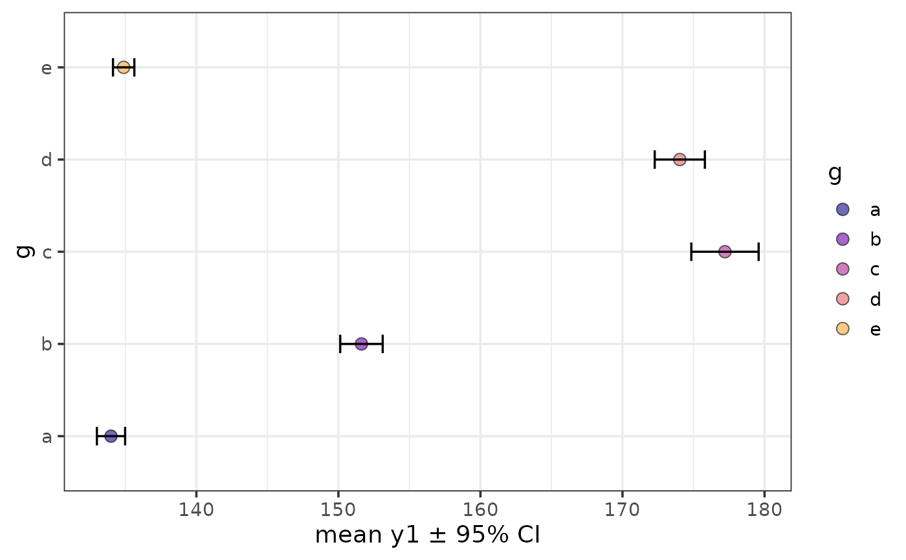
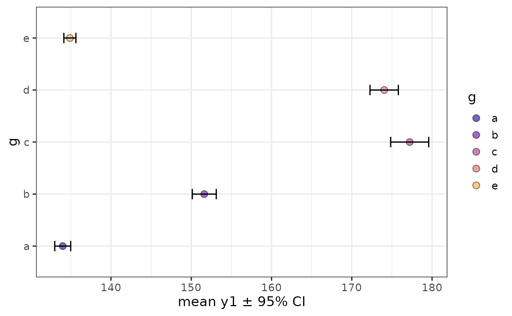
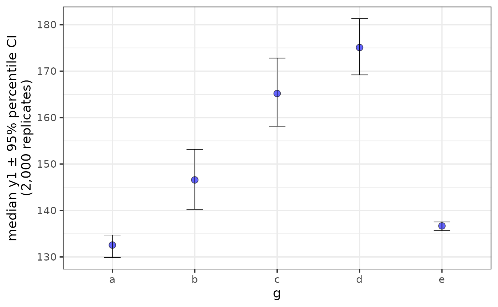
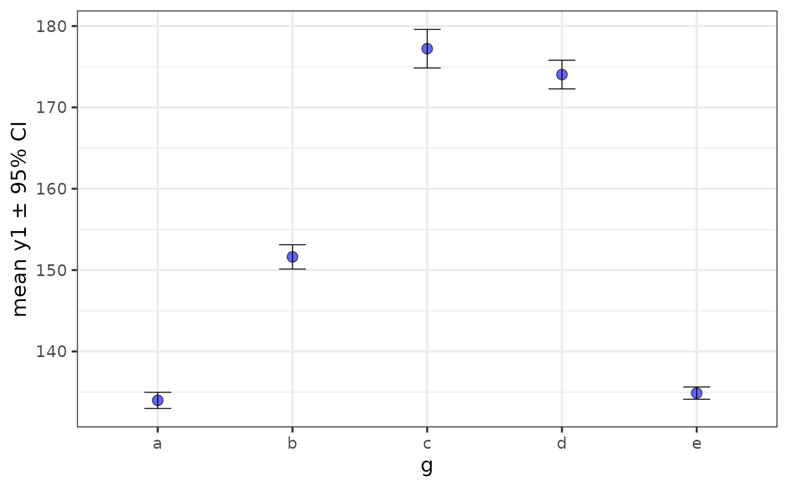
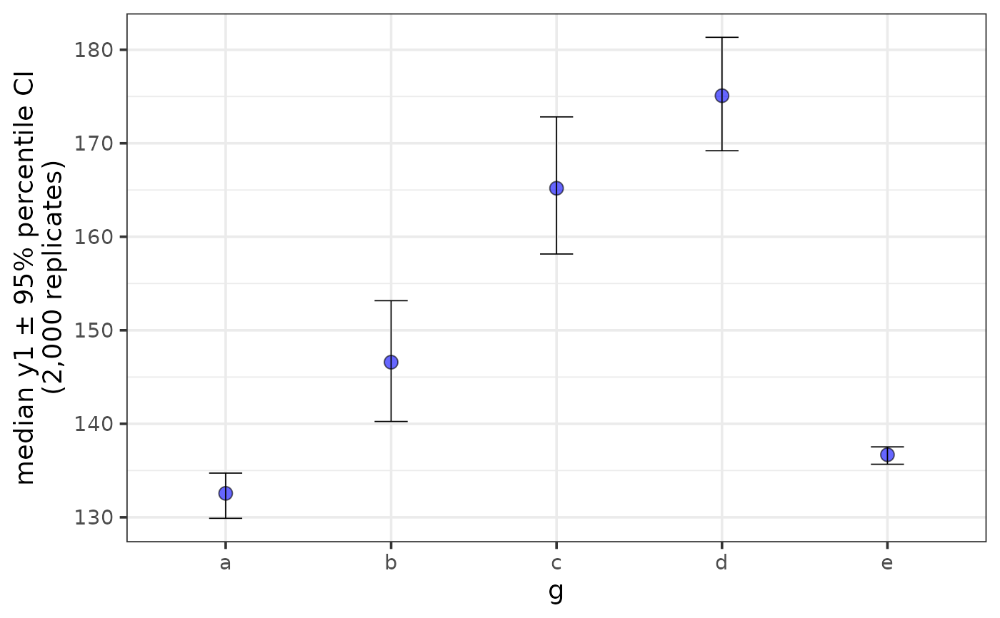
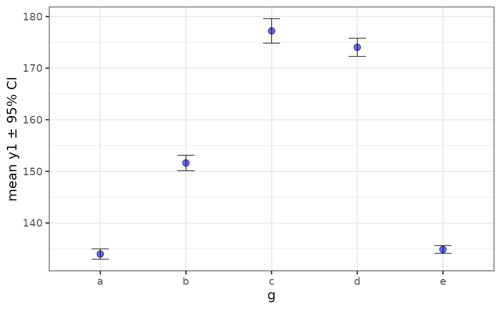

Easily generate plots of a sample mean or median +/- error bars using ggplot2 with a simplified customization interface with static (ggplot) and interactive (plotly) output options. The static output is useful for producing static reports (e.g. for manuscripts) and is readily customized further using ggplot2 syntax. The interactive output is helpful for exploring the data and producing dynamic html reports. See this blog post for an introduction to ggplot2.
plot_stat_error(
data,
y,
x = NULL,
geom = c("point", "bar"),
stat = c("mean", "median"),
error = c("ci", "sd", "se", "var", "quartile"),
ci_level = 0.95,
ci_type = c("perc", "bca", "norm", "basic"),
replicates = 2000,
parallel = FALSE,
cores = NULL,
xlab = NULL,
ylab = NULL,
title = NULL,
title_hjust = 0.5,
caption = NULL,
caption_hjust = 0,
...,
ylim = c(NA, NA),
ybreaks = ggplot2::waiver(),
transform_y = FALSE,
y_transformation = "log10",
y_var_labs = ggplot2::waiver(),
x_var_order = NULL,
x_var_labs = NULL,
fill_var = NULL,
fill_var_order = NULL,
fill_var_values = NULL,
fill_var_labs = NULL,
fill_var_title = NULL,
colour_var = NULL,
colour_var_order = NULL,
colour_var_values = NULL,
colour_var_labs = NULL,
colour_var_title = NULL,
palette = c("plasma", "C", "magma", "A", "inferno", "B", "viridis", "D", "cividis",
"E"),
palette_direction = c("d2l", "l2d"),
palette_begin = 0,
palette_end = 0.8,
greyscale = FALSE,
b_width = 0.75,
p_size = 3,
p_shape = 21,
dodge_width = 0.9,
eb_size = 0.3,
eb_width = 0.2,
eb_alpha = 1,
eb_line_type = 1,
eb_colour = NULL,
add_lines = F,
line_alpha = 0.75,
line_group = NULL,
line_colour = NULL,
line_type = 1,
line_size = 0.5,
theme = c("bw", "classic", "grey", "light", "dark", "minimal"),
text_size = 14,
font = c("sans", "serif", "mono"),
coord_flip = FALSE,
omit_legend = FALSE,
legend_position = c("right", "left", "bottom", "top"),
facet_var = NULL,
facet_var_order = NULL,
facet_var_labs = NULL,
facet_var_strip_position = c("top", "bottom"),
facet_var_text_bold = TRUE,
print_stats = F,
aesthetic_options = FALSE,
output = "p",
interactive = FALSE,
na.rm = TRUE
)Arguments
- data
A data frame or tibble containing the dependent measure "y", the independent measure "x" (optional), and any grouping variables or covariates.
- y
A numeric variable you want to plot on the y-axis (quoted or unquoted), e.g. y = "variable" or y = variable.
- x
A categorical variable you want to plot on the x-axis (quoted or unquoted), e.g. x = "variable" or x = variable.
- geom
Determines whether the chosen summary statistic is displayed using
geom_bar(geom = "bar"; the default) orgeom_point(geom = "point")- stat
The summary statistic to use for plotting bars/points. Options are "mean" (the default) or "median".
- error
The statistic to use for the error bars. When stat = "mean", available options include se (standard error), sd (standard deviation), var(variance), and ci (confidence interval; the default). When stat = "median", options include "quartile" (lower bound = 25th percentile & upper bound = 75th percentile), or "ci". See below for more details on confidence intervals. With respect to CIs, when stat = "mean", CIs are calculated directly from a normal distribution based on the standard error using
qnorm. In contrast, bootstrapped CIs of the specified type are returned viamedian_ciwhen stat = "median".- ci_level
The confidence level to use for constructing confidence intervals. Default is set to
ci_level = 0.95for 95 percent CIs.- ci_type
The type of confidence intervals to calculate from the bootstrap samples when stat = "median" and error = "ci". Most of the options available in the underlying boot.ci function are implemented (except for studentized intervals): "norm" for an approximation based on the normal distribution, "perc" for percentile, "basic" for basic, and "bca" for bias-corrected and accelerated. Percentile intervals are the default since these are typically sufficient when working with large data sets (e.g. >= 100,000 rows of data) and are faster to calculate than BCa intervals. However, BCa intervals (the default for the more primitive
median_cifunction) tend to provide the most accurate/least-biased results (Efron, 1987), particularly for small-medium sized samples, at the obvious cost of requiring more time to calculate. Seeboot.cifor details.- replicates
The number of bootstrap replicates to use for calculating bootstrapped CIs when stat = "median" and error = "ci". Default is 2,000, as recommended by Efron & Tibshirani (1993). For publications, or if you need more precise estimates, more replications (e.g. >= 5,000) are recommended. N.B. more replications will of course take longer to run. If you get the error: "estimated adjustment 'a' is NA" then try again with more replications.
- parallel
set to TRUE if you want to use multiple cores or FALSE if you don't (the default). Note that there is some processing overhead involved when operating in parallel so speed gains may not be very noticeable for smaller samples (and may even take longer than sequential processing). Due to the nature of the underlying parallelisation architecture, performance gains will likely be greater on non-Windows machines that can use the "multicore" implementation instead of "snow". For obvious reasons this option only works on machines with more than 1 logical processing core.
- cores
If parallel is set to TRUE, this determines the number of cores to use. To see how many cores are available on your machine, use parallel::detectCores()
- xlab
Specify/overwrite the x-axis label using a character string, e.g. "x-axis label". If no variable is assigned to x, then this label will be omitted.
- ylab
Specify/overwrite the y-axis label using a character string, e.g. "y-axis label". If not specified, this label will reflect a combination of the chosen statistic, y variable, and error bar options.
- title
Add a main title to the plot using a character string, e.g. "scatterplot of y as a function of x".
- title_hjust
Left-to-right/horizontal justification (alignment) of the main plot title. Accepts values from 0 (far left) to 1 (far right). Default is 0.5 (centre).
- caption
Add a figure caption to the bottom of the plot using a character string.
- caption_hjust
Left-to-right/horizontal justification (alignment) of the caption. Accepts values from 0 (far left) to 1 (far right). Default is 0 (left).
- ...
graphical parameters (not associated with variables) to be passed to
geom_pointorgeom_baraccording to which base geometry is specified (via the geom argument), e.g. colour, fill, or transparency (e.g. alpha = 0.6) to be applied to all cases. To see some of the available options in a web browser, set the aesthetic_options argument to TRUE. Exceptions to this are the width of the bar graphs which is controlled using the b_width argument, and the shape & size of points for geom = "point", which are controlled using p_size & p_shape (see below).- ylim
specify the y-axis limits, e.g. ylim = c(lower_limit, upper_limit). Use NA for the existing minimum or maximum value of y, e.g. the default is ylim = c(NA, NA)
- ybreaks
This allows you to change the break points to use for tick marks on the y-axis.
seqis particularly useful here. Seescale_y_continuousfor details. If ybreaks is specified, then ylim should be also.- transform_y
Would you like to transform the y axis? (TRUE or FALSE)
- y_transformation
If transform_y = TRUE, this determines the transformation to be applied. Common choices include "log10" (the default), "log2", "sqrt", or "exp". See
scale_continuousfor details.- y_var_labs
Allows you to modify the labels displayed with the y-axis tick marks. See
scale_continuousfor details.- x_var_order
If a variable has been assigned to x, this allows you to modify the order of the variable groups, e.g. x = grouping_variable, x_var_order = c("group_2", "group_1"). See
fct_relevelfor details.- x_var_labs
If a variable has been assigned to x, this allows you to modify the labels of the variable groups, e.g. x = grouping_variable, x_var_labs = c("group_1_new_label" = "group_1_old_label", "group_2_new_label" = "group_2_old_label"). See
fct_recodefor details.- fill_var
Use if you want to assign a variable to the point fill colour, e.g. fill_var = "grouping_variable" or fill_var = grouping_variable. Produces separate sets of points for each level of the fill variable. See
aesfor details. Note: for geom = "point", fill_var and fill only affect shapes 21-24 (21 is the default). To split the data by a variable based on colour, it is therefore easier to use colour_var for this particular plot geometry.- fill_var_order
If a variable has been assigned to fill using fill_var, this allows you to modify the order of the variable groups, e.g. fill_var = grouping_variable, fill_var_order = c("group_2", "group_1"). See
fct_relevelfor details.- fill_var_values
If a variable has been assigned to fill using fill_var, this allows you to modify the colours assigned to the fill of each of the variable groups, e.g. fill_var = grouping_variable, fill_var_values = c("blue", "red"). See
scale_fill_manualfor details. For the colour options available in base R, seecolour_options.- fill_var_labs
If a variable has been assigned to fill using fill_var, this allows you to modify the labels of the variable groups, e.g. fill_var = grouping_variable, fill_var_labs = c("group_1_new_label" = "group_1_old_label", "group_2_new_label" = "group_2_old_label"). See
fct_recodefor details.- fill_var_title
If a variable has been assigned to fill using fill_var, this allows you to modify the variable label in the plot legend.
- colour_var
Use if you want to assign a variable to the point outline colour, e.g. colour_var = "grouping_variable" or colour_var = grouping_variable. Produces separate sets of points for each level of the colour variable. See
aesfor details.- colour_var_order
If a variable has been assigned to colour using colour_var, this allows you to modify the order of the variable groups, e.g. colour_var = grouping_variable, fill_var_order = c("group_2", "group_1"). See
fct_relevelfor details.- colour_var_values
If a variable has been assigned to colour using colour_var, this allows you to modify the colours assigned to the outline of each of the variable groups, e.g. colour_var = grouping_variable, colour_var_values = c("blue", "red"). See
scale_fill_manualfor details. For the colour options available in base R, seecolour_options.- colour_var_labs
If a variable has been assigned to colour using colour_var, this allows you to modify the labels of the variable groups, e.g. colour_var = grouping_variable, colour_var_labs = c("group_1_new_label" = "group_1_old_label", "group_2_new_label" = "group_2_old_label"). See
fct_recodefor details.- colour_var_title
If a variable has been assigned to colour using colour_var, this allows you to modify the variable label in the plot legend.
- palette
If a variable is assigned to fill_var or colour_var, this determines which viridis colour palette to use. Options include "plasma" or "C" (default), "magma" or "A", "inferno" or "B", "viridis" or "D", and "cividis" or "E". See this link for examples. You can override these colour palettes with fill_var_values or colour_var_values.
- palette_direction
Choose "d2l" for dark to light (default) or "l2d" for light to dark.
- palette_begin
Value between 0 and 1 that determines where along the full range of the chosen colour palette's spectrum to begin sampling colours. See
scale_fill_viridis_dfor details.- palette_end
Value between 0 and 1 that determines where along the full range of the chosen colour palette's spectrum to end sampling colours. See
scale_fill_viridis_dfor details.- greyscale
Set to TRUE if you want the plot converted to greyscale.
- b_width
The width of the bars when geom = "bar". Affects the spacing between adjacent bars, where a value of 1 specifies that there should be no space between adjacent bars. Default is 0.75.
- p_size
The size of the points when geom = "point", default = 2.
- p_shape
The shape of the points when geom = "point". The default is 21, which is a circle like shape 1 (the ggplot2 default), but unlike the latter also has a fill parameter.
- dodge_width
Determines the amount by which to jitter points and error bars when variables are mapped/assigned to x, fill, or colour. To disable jittering set this to 0.
- eb_size
Controls the thickness of error bar lines. Default = 0.3.
- eb_width
Controls the width of error bar endpoint lines. Default = 0.2.
- eb_alpha
This adjusts the transparency/opacity of the graphical components of the error bars, ranging from 0 = 100 percent transparent to 1 = 100% percent opaque.
- eb_line_type
Controls the error bar line type. Default = 1 or "solid".
- eb_colour
Controls the colour of error bar lines. If unspecified, will either be "black" for all lines, or differ by groups if colour_var is specified.
- add_lines
Would you like to connect the estimated statistics (the points or ends of the bars) with lines (TRUE/FALSE)? Default = FALSE. Requires that a variable is assigned to x. Particularly useful for showing changes over time between groups (assigned to either fill_var or colour_var). If only one of fill_var or colour_var are specified then lines will be split according to the same variable mapping. If neither or both of these parameters are specified and you want the lines split by a grouping variable, assign the chosen variable to line_group.
- line_alpha
This adjusts the transparency/opacity of the lines connecting each (groupwise) estimate, ranging from 0 = 100 percent transparent to 1 = 100 percent opaque.
- line_group
Determines which variable to split the connecting lines on. Only required if (2 different) variables are already assigned to both fill_var and colour_var.
- line_colour
Controls the colour of connection lines. If unspecified, will either be "black" for all lines, or differ by groups if colour_var is specified.
- line_type
Controls the connection line type. Default = 1 or "solid".
- line_size
Controls the thickness of the connection lines. Default = 0.5.
- theme
Adjusts the theme using 1 of 6 predefined "complete" theme templates provided by ggplot2. Currently supported options are: "classic", "bw" (the elucidate default), "grey" (the ggplot2 default), "light", "dark", & "minimal". See
theme_bwfor more information.- text_size
This controls the size of all plot text. Default = 14.
- font
This controls the font of all plot text. Default = "sans" (Arial). Other options include "serif" (Times New Roman) and "mono" (Courier New).
- coord_flip
Set to TRUE (default = FALSE) if you want to swap the x and y axes. See
coord_flipfor more information.- omit_legend
Set to TRUE if you want to remove/omit the legends.
- legend_position
This allows you to modify the legend position. Options include "right" (the default), "left", "top", & "bottom".
- facet_var
Use if you want separate plots for each level of a grouping variable (i.e. a faceted plot), e.g. facet_var = "grouping_variable" or facet_var = grouping_variable. See
facet_wrapfor details.- facet_var_order
If a variable has been assigned for faceting using facet_var, this allows you to modify the order of the variable groups, e.g. facet_var = grouping_variable, facet_var_order = c("group_2", "group_1"). See
fct_relevelfor details.- facet_var_labs
If a variable has been assigned for faceting using facet_var, this allows you to modify the labels of the variable groups which will appear in the facet strips, e.g. facet_var = grouping_variable, facet_var_labs = c("group_1_new_label" = "group_1_old_label", "group_2_new_label" = "group_2_old_label"). See
fct_recodefor details.- facet_var_strip_position
If a variable has been assigned for faceting using facet_var, this allows you to modify the position of the facet strip labels. Sensible options include "top" (the default) or "bottom".
- facet_var_text_bold
If a variable has been assigned for faceting using facet_var, this allows you to use boldface (TRUE/default or FALSE) for the facet strip label text.
- print_stats
Set to TRUE (the default is FALSE) if you would like the values used for plotting and info on the y variable sample size(s) & missing values to be printed as the function is executed. To save/extract these values, use output = "ps" instead.
- aesthetic_options
If set to TRUE, opens a web browser to the tidyverse online aesthetic options vignette.
- output
Set to "p" if only want the ggplot or plotly object (depending on whether interactive = T or F) to be returned. Set to "ps" if you would instead like a list to be returned containing both the "plot" as a ggplot2/plotly object and "stats" used to produce it as a tibble. This allows you to extract/save the values for subsequent reporting or utilization.
- interactive
Determines whether a static ggplot object or an interactive html plotly object is returned. See
ggplotlyfor details.- na.rm
This determines whether missing values (NAs) should be removed before attempting to calculate the summary statistics used for plotting.
Value
A ggplot object or plotly object depending on whether static or interactive output was requested. This is returned as a standalone object if output = "p", or as the "plot" component of a list also containing the underlying "stats" as a 2nd component if output = "ps.
References
Wickham, H. (2016). ggplot2: elegant graphics for data analysis. New York, N.Y.: Springer-Verlag.
Altman, D. G., & Bland, J. M. (2005). Standard deviations and standard errors. Bmj, 331(7521), 903.
Efron, B. (1987). Better bootstrap confidence intervals. Journal of the American statistical Association, 82(397), 171-185.
Efron, B., & Tibshirani, R. J. (1993). An introduction to the bootstrap. New York: Chapman & Hall.
See also
Examples
data(mtcars) #load the mtcars data
plot_stat_error(mtcars, y = mpg, x = cyl, colour = "blue")
 plot_stat_error(mtcars, y = mpg, x = cyl, colour = "blue", geom = "point")
plot_stat_error(mtcars, y = mpg, x = cyl, colour = "blue", geom = "point")
 # \donttest{
plot_stat_error(pdata, y = y1, x = d, colour_var = g, print_stats = TRUE,
geom = "point", p_size = 3,
add_lines = TRUE,
dodge_width = 0,
alpha = 0.6)
#> # A tibble: 60 × 9
#> d g cases n na p_na lower mean upper
#> <chr> <chr> <int> <int> <int> <dbl> <dbl> <dbl> <dbl>
#> 1 2008-01-01 e 196 196 0 0 98.8 100. 101.
#> 2 2008-01-01 c 185 185 0 0 99.2 101. 102.
#> 3 2008-01-01 d 198 198 0 0 99.2 101. 102.
#> 4 2008-01-01 a 216 216 0 0 98.5 99.8 101.
#> 5 2008-01-01 b 205 205 0 0 99.8 101. 103.
#> 6 2009-01-01 e 196 196 0 0 118. 120. 121.
#> 7 2009-01-01 c 185 185 0 0 114. 116. 117.
#> 8 2009-01-01 d 198 198 0 0 118. 120. 121.
#> 9 2009-01-01 a 216 216 0 0 108. 110. 111.
#> 10 2009-01-01 b 205 205 0 0 114. 115. 117.
#> 11 2010-01-01 e 196 196 0 0 148. 149. 150.
#> 12 2010-01-01 c 185 185 0 0 118. 119. 121.
#> 13 2010-01-01 d 198 198 0 0 129. 130. 131.
#> 14 2010-01-01 a 216 216 0 0 111. 112. 113.
#> 15 2010-01-01 b 205 205 0 0 113. 114. 115.
#> 16 2011-01-01 e 196 196 0 0 130. 131. 133.
#> 17 2011-01-01 c 185 185 0 0 131. 132. 133.
#> 18 2011-01-01 d 198 198 0 0 149. 151. 152.
#> 19 2011-01-01 a 216 216 0 0 119. 120. 121.
#> 20 2011-01-01 b 205 205 0 0 120. 121. 122.
#> 21 2012-01-01 e 196 196 0 0 135. 136. 137.
#> 22 2012-01-01 c 185 185 0 0 138. 139. 141.
#> 23 2012-01-01 d 198 198 0 0 149. 151. 152.
#> 24 2012-01-01 a 216 216 0 0 109. 110. 111.
#> 25 2012-01-01 b 205 205 0 0 120. 121. 122.
#> 26 2013-01-01 e 196 196 0 0 144. 146. 147.
#> 27 2013-01-01 c 185 185 0 0 149. 150. 152.
#> 28 2013-01-01 d 198 198 0 0 159. 160. 162.
#> 29 2013-01-01 a 216 216 0 0 119. 120. 122.
#> 30 2013-01-01 b 205 205 0 0 129. 131. 132.
#> 31 2014-01-01 e 196 196 0 0 154. 156. 157.
#> 32 2014-01-01 c 185 185 0 0 179. 181. 183.
#> 33 2014-01-01 d 198 198 0 0 189. 190. 192.
#> 34 2014-01-01 a 216 216 0 0 144. 146. 147.
#> 35 2014-01-01 b 205 205 0 0 158. 160. 161.
#> 36 2015-01-01 e 196 196 0 0 117. 118. 119.
#> 37 2015-01-01 c 185 185 0 0 208. 210. 212.
#> 38 2015-01-01 d 198 198 0 0 198. 199. 201.
#> 39 2015-01-01 a 216 216 0 0 160. 161. 162.
#> 40 2015-01-01 b 205 205 0 0 178. 179. 181.
#> 41 2016-01-01 e 196 196 0 0 135. 137. 138.
#> 42 2016-01-01 c 185 185 0 0 218. 220. 221.
#> 43 2016-01-01 d 198 198 0 0 210. 211. 213.
#> 44 2016-01-01 a 216 216 0 0 148. 149. 151.
#> 45 2016-01-01 b 205 205 0 0 184. 185. 187.
#> 46 2017-01-01 e 196 196 0 0 145. 146. 147.
#> 47 2017-01-01 c 185 185 0 0 249. 251. 252.
#> 48 2017-01-01 d 198 198 0 0 224. 225. 227.
#> 49 2017-01-01 a 216 216 0 0 169. 170. 171.
#> 50 2017-01-01 b 205 205 0 0 194. 195. 197.
#> 51 2018-01-01 e 196 196 0 0 129. 131. 132.
#> 52 2018-01-01 c 185 185 0 0 245. 246. 248.
#> 53 2018-01-01 d 198 198 0 0 218. 220. 222.
#> 54 2018-01-01 a 216 216 0 0 147. 149. 151.
#> 55 2018-01-01 b 205 205 0 0 199. 201. 202.
#> 56 2019-01-01 e 196 196 0 0 148. 149. 151.
#> 57 2019-01-01 c 185 185 0 0 259. 261. 263.
#> 58 2019-01-01 d 198 198 0 0 228. 230. 232.
#> 59 2019-01-01 a 216 216 0 0 159. 160. 162.
#> 60 2019-01-01 b 205 205 0 0 194. 196. 197.
# \donttest{
plot_stat_error(pdata, y = y1, x = d, colour_var = g, print_stats = TRUE,
geom = "point", p_size = 3,
add_lines = TRUE,
dodge_width = 0,
alpha = 0.6)
#> # A tibble: 60 × 9
#> d g cases n na p_na lower mean upper
#> <chr> <chr> <int> <int> <int> <dbl> <dbl> <dbl> <dbl>
#> 1 2008-01-01 e 196 196 0 0 98.8 100. 101.
#> 2 2008-01-01 c 185 185 0 0 99.2 101. 102.
#> 3 2008-01-01 d 198 198 0 0 99.2 101. 102.
#> 4 2008-01-01 a 216 216 0 0 98.5 99.8 101.
#> 5 2008-01-01 b 205 205 0 0 99.8 101. 103.
#> 6 2009-01-01 e 196 196 0 0 118. 120. 121.
#> 7 2009-01-01 c 185 185 0 0 114. 116. 117.
#> 8 2009-01-01 d 198 198 0 0 118. 120. 121.
#> 9 2009-01-01 a 216 216 0 0 108. 110. 111.
#> 10 2009-01-01 b 205 205 0 0 114. 115. 117.
#> 11 2010-01-01 e 196 196 0 0 148. 149. 150.
#> 12 2010-01-01 c 185 185 0 0 118. 119. 121.
#> 13 2010-01-01 d 198 198 0 0 129. 130. 131.
#> 14 2010-01-01 a 216 216 0 0 111. 112. 113.
#> 15 2010-01-01 b 205 205 0 0 113. 114. 115.
#> 16 2011-01-01 e 196 196 0 0 130. 131. 133.
#> 17 2011-01-01 c 185 185 0 0 131. 132. 133.
#> 18 2011-01-01 d 198 198 0 0 149. 151. 152.
#> 19 2011-01-01 a 216 216 0 0 119. 120. 121.
#> 20 2011-01-01 b 205 205 0 0 120. 121. 122.
#> 21 2012-01-01 e 196 196 0 0 135. 136. 137.
#> 22 2012-01-01 c 185 185 0 0 138. 139. 141.
#> 23 2012-01-01 d 198 198 0 0 149. 151. 152.
#> 24 2012-01-01 a 216 216 0 0 109. 110. 111.
#> 25 2012-01-01 b 205 205 0 0 120. 121. 122.
#> 26 2013-01-01 e 196 196 0 0 144. 146. 147.
#> 27 2013-01-01 c 185 185 0 0 149. 150. 152.
#> 28 2013-01-01 d 198 198 0 0 159. 160. 162.
#> 29 2013-01-01 a 216 216 0 0 119. 120. 122.
#> 30 2013-01-01 b 205 205 0 0 129. 131. 132.
#> 31 2014-01-01 e 196 196 0 0 154. 156. 157.
#> 32 2014-01-01 c 185 185 0 0 179. 181. 183.
#> 33 2014-01-01 d 198 198 0 0 189. 190. 192.
#> 34 2014-01-01 a 216 216 0 0 144. 146. 147.
#> 35 2014-01-01 b 205 205 0 0 158. 160. 161.
#> 36 2015-01-01 e 196 196 0 0 117. 118. 119.
#> 37 2015-01-01 c 185 185 0 0 208. 210. 212.
#> 38 2015-01-01 d 198 198 0 0 198. 199. 201.
#> 39 2015-01-01 a 216 216 0 0 160. 161. 162.
#> 40 2015-01-01 b 205 205 0 0 178. 179. 181.
#> 41 2016-01-01 e 196 196 0 0 135. 137. 138.
#> 42 2016-01-01 c 185 185 0 0 218. 220. 221.
#> 43 2016-01-01 d 198 198 0 0 210. 211. 213.
#> 44 2016-01-01 a 216 216 0 0 148. 149. 151.
#> 45 2016-01-01 b 205 205 0 0 184. 185. 187.
#> 46 2017-01-01 e 196 196 0 0 145. 146. 147.
#> 47 2017-01-01 c 185 185 0 0 249. 251. 252.
#> 48 2017-01-01 d 198 198 0 0 224. 225. 227.
#> 49 2017-01-01 a 216 216 0 0 169. 170. 171.
#> 50 2017-01-01 b 205 205 0 0 194. 195. 197.
#> 51 2018-01-01 e 196 196 0 0 129. 131. 132.
#> 52 2018-01-01 c 185 185 0 0 245. 246. 248.
#> 53 2018-01-01 d 198 198 0 0 218. 220. 222.
#> 54 2018-01-01 a 216 216 0 0 147. 149. 151.
#> 55 2018-01-01 b 205 205 0 0 199. 201. 202.
#> 56 2019-01-01 e 196 196 0 0 148. 149. 151.
#> 57 2019-01-01 c 185 185 0 0 259. 261. 263.
#> 58 2019-01-01 d 198 198 0 0 228. 230. 232.
#> 59 2019-01-01 a 216 216 0 0 159. 160. 162.
#> 60 2019-01-01 b 205 205 0 0 194. 196. 197.
 plot_stat_error(pdata, y = y1, x = g, coord_flip = TRUE,
fill_var = g, geom = "point", eb_size = 0.6,
alpha = 0.6)

plot_stat_error(pdata, y = y1, x = g, fill = "blue", alpha = 0.6,
stat = "median", error = "quartile")
plot_stat_error(pdata, y = y1, x = g, coord_flip = TRUE,
fill_var = g, geom = "point", eb_size = 0.6,
alpha = 0.6)

plot_stat_error(pdata, y = y1, x = g, fill = "blue", alpha = 0.6,
stat = "median", error = "quartile")
 plot_stat_error(pdata, y = y1, x = g, fill = "blue", alpha = 0.6,
stat = "median", error = "ci")

plot_stat_error(pdata, y = y1, x = g, fill = "blue", alpha = 0.6,
stat = "mean", error = "ci", ci_level = 0.8,
interactive = TRUE)
#when output = "ps" the plot is stored as the 1st element of a
#list
out <- plot_stat_error(pdata, y = y1, x = g, fill = "blue", alpha = 0.6,
stat = "mean", error = "ci", output = "ps")
out$plot #print the plot to the appropriate active graphics device

out$stats #print the descriptive summary table with the values used for plotting to the console
#> # A tibble: 5 × 8
#> g cases n na p_na lower mean upper
#> <chr> <int> <int> <int> <dbl> <dbl> <dbl> <dbl>
#> 1 e 2352 2352 0 0 134. 135. 136.
#> 2 c 2220 2220 0 0 175. 177. 180.
#> 3 d 2376 2376 0 0 172. 174. 176.
#> 4 a 2592 2592 0 0 133. 134. 135.
#> 5 b 2460 2460 0 0 150. 152. 153.
# }
plot_stat_error(pdata, y = y1, x = g, fill = "blue", alpha = 0.6,
stat = "median", error = "ci")

plot_stat_error(pdata, y = y1, x = g, fill = "blue", alpha = 0.6,
stat = "mean", error = "ci", ci_level = 0.8,
interactive = TRUE)
#when output = "ps" the plot is stored as the 1st element of a
#list
out <- plot_stat_error(pdata, y = y1, x = g, fill = "blue", alpha = 0.6,
stat = "mean", error = "ci", output = "ps")
out$plot #print the plot to the appropriate active graphics device

out$stats #print the descriptive summary table with the values used for plotting to the console
#> # A tibble: 5 × 8
#> g cases n na p_na lower mean upper
#> <chr> <int> <int> <int> <dbl> <dbl> <dbl> <dbl>
#> 1 e 2352 2352 0 0 134. 135. 136.
#> 2 c 2220 2220 0 0 175. 177. 180.
#> 3 d 2376 2376 0 0 172. 174. 176.
#> 4 a 2592 2592 0 0 133. 134. 135.
#> 5 b 2460 2460 0 0 150. 152. 153.
# }